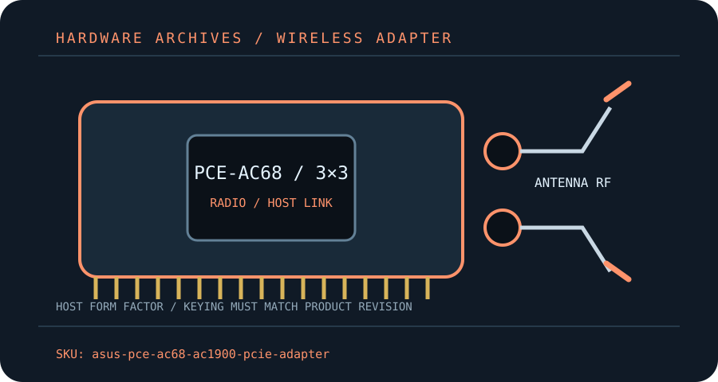

[ MODEL-SPECIFIC M.2 / PCIE WI-FI HARDWARE ]
ASUS PCE-AC68 AC1900 Wi-Fi 5 PCIe Adapter
Legacy three-stream dual-band 802.11ac adapter with three removable antennas and no Bluetooth radio.
IDENTIFICATION: Match the full model, hardware revision, regulatory region and radio-module label before ordering replacements or selecting drivers. Values are manufacturer specifications, not a guaranteed measurement.

Dedicated wireless specifications
| Cataloged product | ASUS PCE-AC68 AC1900 Wi-Fi 5 PCIe Adapter |
|---|---|
| Chipset / radio module | Broadcom BCM4360-class 802.11ac WLAN controller as identified for this legacy design; ASUS public support documentation should be checked against the actual board revision. |
| Wi-Fi generation / standards | Wi-Fi 5 / IEEE 802.11ac; also supports 802.11a/b/g/n. |
| Radio bands, channels & width | 2.4 GHz and 5 GHz dual-band operation; ASUS markets AC1900 combined nominal class. Region-specific channels and supported channel widths vary. |
| Spatial streams / nominal link rates | 3×3 MIMO; up to 1,300 Mb/s nominal at 5 GHz and up to 600 Mb/s 2.4 GHz TurboQAM with a compatible AP/client (not an ordinary single-band PHY rate). |
| Host interface / form factor / keying | PCI Express x1 add-in board; standard desktop PCIe edge connector, no M.2 radio module or Bluetooth USB lead. |
| Antenna connectors | Three detachable external antennas connect to three RP-SMA jacks; match antenna/base connectors and do not force threaded fittings. |
| Bluetooth | No Bluetooth function is specified for PCE-AC68. |
| Operating-system / driver compatibility | Legacy ASUS software is available for older Windows generations; verify the OS-specific PCE-AC68 download for the host. Current Windows releases may rely on legacy/vendor driver availability; no macOS or Linux support is promised by this record. |
| Regulatory and host caveats | Wi-Fi 5 only: no 6 GHz or Wi-Fi 6/7 functions. The optional 600 Mb/s 2.4 GHz figure depends on proprietary TurboQAM support at both endpoints. Check the card revision, driver-signing status and OS before deploying in current systems; local 5 GHz channel restrictions apply. |
Model-specific installation notes
Install only with the host powered down and follow the manufacturer’s manual for slot, cable, antenna and ESD precautions. Fit and electrical compatibility are separate questions: the host must support the stated interface, firmware and driver for this exact SKU.
Nominal PHY rates vary with channel width, modulation, signal quality, regulatory domain, AP capabilities and concurrent client traffic. They are not measured Internet or application throughput. Confirm local 6 GHz/5 GHz channel permissions before deployment.
Manufacturer sources
- ASUS PCE-AC68 technical specificationsASUS manufacturer product/support reference for the legacy AC1900 adapter.
- ASUS PCE-AC68 manuals and downloadsASUS manual and OS-specific support/downloads for installation and driver checks.
Source pages can be regional or revision-specific. Use the exact manufacturer page and package matching the label on the adapter and host.